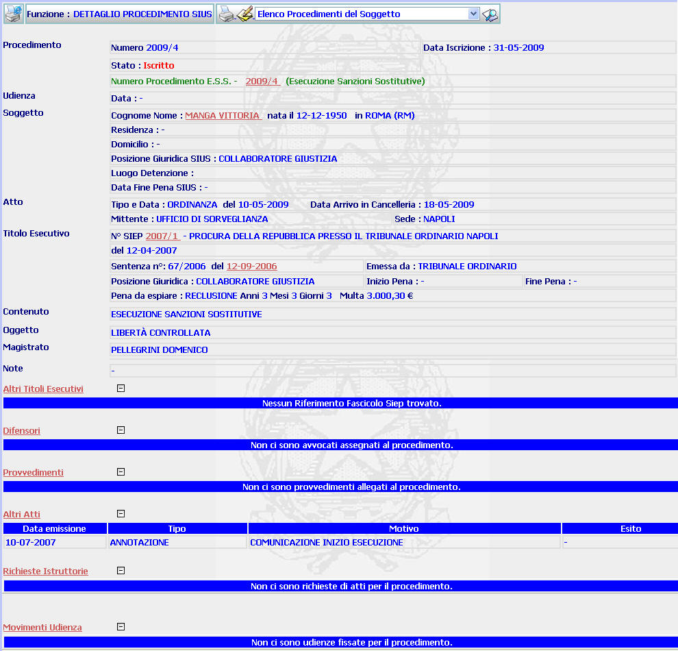
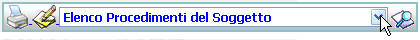
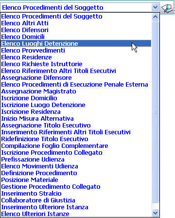
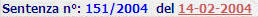
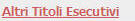
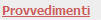
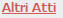
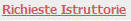
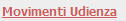

GENERALITA'
DETTAGLIO PROCEDIMENTO ESS: La funzione, consente di visualizzare i dati di dettaglio di un procedimento Sius avente come contenuto "Esecuzione Sanzione Sostitutiva" che è stato iscritto nel sistema ed effettuare su di esso alcune operazioni.
LE MASCHERE VIDEO
La funzione in esame viene realizzata attraverso l'utilizzo della seguente maschera che riporta gli elementi descrittivi e operativi dei dati del procedimento:

COME FARE PER ...
| Per modificare i dati inseriti relativi al procedimento, l'utente deve: |
Cliccare sul pulsante
; si aprirà la maschera modifica procedimento che permette di effettuare le modifiche volute.
|
Per lanciare l'esecuzione di funzioni correlate alla maschera di dettaglio del procedimento l'utente deve agire sul menu a tendina |
a)Posizionarsi con il mouse in corrispondenza di:

b)Cliccare con il bottone sinistro del mouse;
A questo punto si aprirà e verrà visualizzata la lista delle funzioni che è possibile attivare contestualmente a quella che si è appena utilizzata:

b) evidenziare la funzione che si desidera attivare
c) Cliccare sul pulsante

| Per visualizzare l'elenco dei procedimenti relativi all'esecuzione della sanzione sostitutiva l'utente deve cliccare sul link relativo all'Anno/Numero del procedimento E.S.S. evidenziato in rosso; |
| Per visualizzare il dettaglio del soggetto l'utente deve cliccare sul link relativo al cognome/nome del soggetto evidenziato in rosso; |

| Per visualizzare il dettaglio del procedimento Siep l'utente deve cliccare sul link relativo all' Anno/Numero del procedimento Siep evidenziato in rosso; |

| Per visualizzare il dettaglio del titolo esecutivo l'utente deve cliccare sul link relativo alla data in rosso; |

| Per visualizzare l'elenco di altri titoli esecutivi associati al procedimento l'utente deve cliccare sul link relativo a altri titoli esecutivi evidenziato in rosso; |

a seguito di tale operazione il sistema aprirà la maschera di elenco riferimenti altri titoli esecutivi
| Per lanciare l'esecuzione di funzioni correlate alla maschera di dettaglio del difensore del procedimento l'utente deve cliccare sul link relativo a Difensori evidenziato in rosso; |
a seguito di tale operazione il sistema aprirà la maschera di elenco difensori
| Per lanciare l'esecuzione di funzioni correlate alla maschera di dettaglio dei provvedimenti emessi l'utente deve cliccare sul link relativo a Provvedimenti evidenziato in rosso; |

a seguito di tale operazione il sistema aprirà la maschera ricerca provvedimenti
| Per lanciare l'esecuzione di funzioni correlate alla maschera di dettaglio degli atti emessi l'utente deve cliccare sul link relativo a Altri Atti evidenziato in rosso; |

a seguito di tale operazione il sistema aprirà la maschera ricerca altri atti
| Per lanciare l'esecuzione di funzioni correlate alla maschera di elenco delle richieste istruttorie emessi l'utente deve cliccare sul link relativo a Richieste istruttorie evidenziato in rosso; |

a seguito di tale operazione il sistema aprirà la maschera ricerca atti richiesti
| Per lanciare l'esecuzione di funzioni correlate alla maschera di elenco delle udienze per il procedimento l'utente deve cliccare sul link relativo a Movimenti Udienza evidenziato in rosso; |

a seguito di tale operazione il sistema aprirà la maschera di elenco movimenti udienza del procedimento
CAMPI
Nella maschera non sono presenti campi digitabili.
PULSANTI
Nella maschera sono presenti i pulsanti
 ,
,
 ,
che fanno parte del gruppo di
pulsanti di "Uso Comune"
,
che fanno parte del gruppo di
pulsanti di "Uso Comune"
BOTTONI
Oltre ai comandi funzionali relativi al menù verticale non sono presenti comandi.